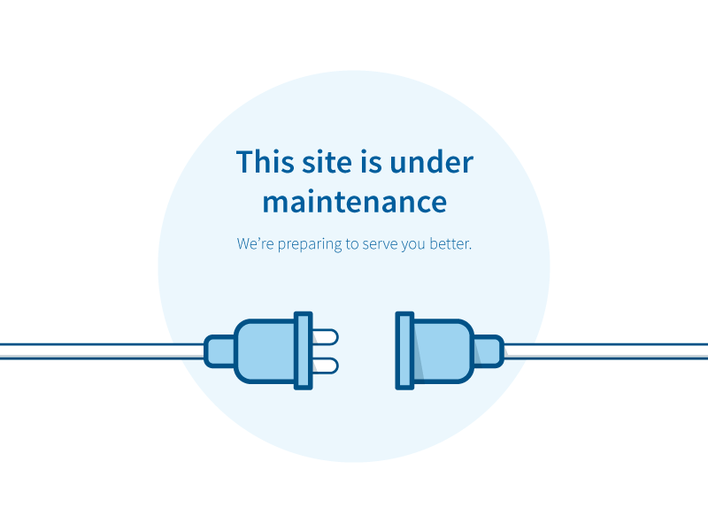

<ion-header>
    <ion-toolbar class="ion-toolbar">
      <ion-buttons slot="start">
        <ion-back-button defaultHref="/home"></ion-back-button>
      </ion-buttons>
      <ion-title> Schedule list</ion-title>
    </ion-toolbar>
  </ion-header>
 
  <ion-content center padding style="padding-top: 100px;">
      
  </ion-content>
